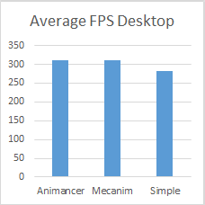
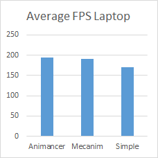
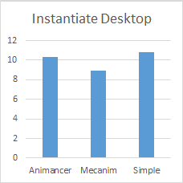
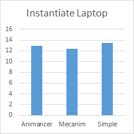

The performance results are close enough not to matter. General frame rate is slightly faster with Animancer while instantiation is slower.
The following benchmarks compare the performance of several animation systems:
- Animancer: this plugin.
- Mecanim: Unity's regular animation system.
- Simple Animation: another animation system made by Unity with the Playables API and available on GitHub.
These test results show relatively small differences, therefore they should generally not be a major factor in deciding which system to use. It's generally better to choose the system you think will make development easiest.
Average Frame Rate
This benchmark counts the number of frames rendered in 30 seconds to calculate the average number of frames rendered per second while animating 250 models.
- During the test, each model is periodically commanded to play a particular animation from a set of 7 options to include the cost of their commands/fading/etc. in the factors being tested.
- The sequence was set so that the number of commands given in a row and the number of models fading at a time would change throughout the duration, however the exact same sequence was repeated every time for every system to ensure a valid test.
- Tests were conducted with the models off-screen (with the
Culling Modeset toAlways Animate) so their rendering wouldn't affect the frame rate. Otherwise the results were simply smaller numbers that fluctuate much more. - Results are avarage frames per second - higher is better.
| Desktop | Laptop |
|---|---|
|  |  |
| Animancer is ~0.0048% faster than Mecanim and ~10% faster than Simple Animation. | Animancer is ~1% faster than Mecanim and ~14% faster than Simple Animation. |
Instantiation
This benchmark tests the time taken to call Object.Instantiate on a prefab 100 times in a row.
- Results are milliseconds taken for the calls - lower is better.
| Desktop | Laptop |
|---|---|
|  |  |
| Mecanim is ~15% faster than Animancer and ~20% faster than Simple Animation. | Mecanim is ~4% faster than Animancer and ~8% faster than Simple Animation. |
Notes
- Tests were conducted in a runtime build so results would not be affected by editor-only functions.
- Tests were conducted using Animancer Pro since the code obfuscation of the Animancer Lite DLLs has a negative impact on performance.
- Each test was conducted 10 times and the results averaged. The results were quite stable and no significant outliers were found.
Test Environments
- Windows 10.
- Unity 2018.1.0f2.
| Part | Desktop | Laptop |
|---|---|---|
| OS | Windows 10 | Windows 10 |
| CPU | i7-6700K | i7-7700HQ |
| GPU | GTX 745 | GTX 1050 |
| RAM | 16GB | 8GB |